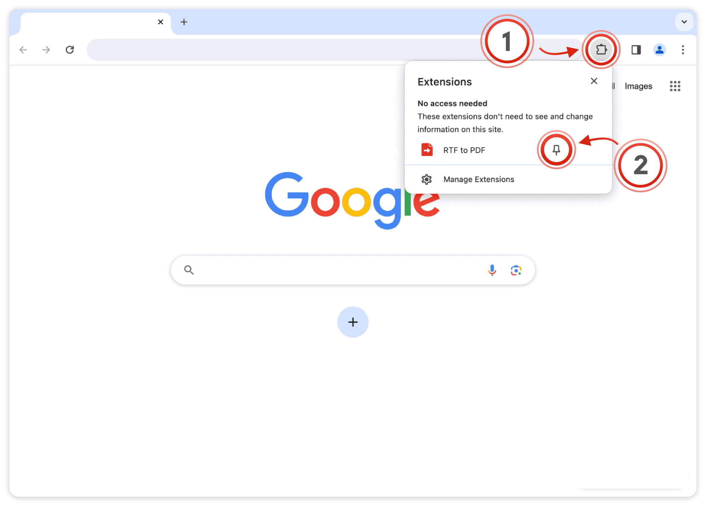
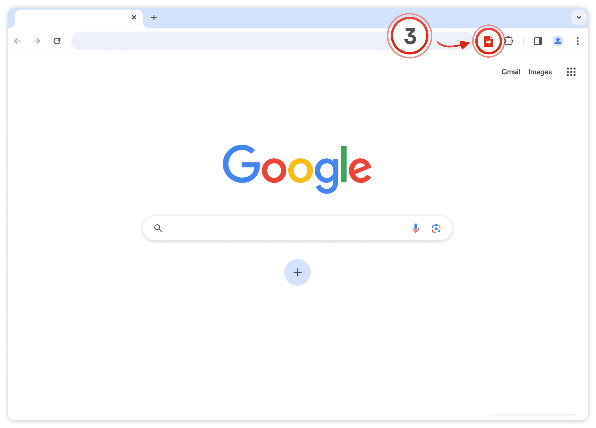
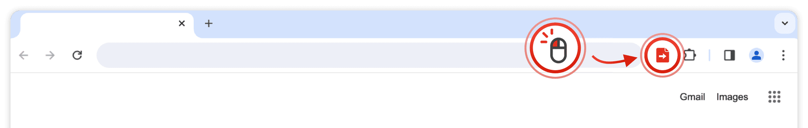
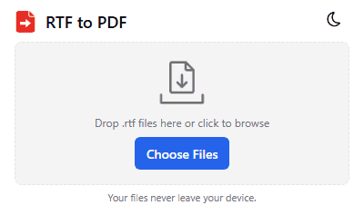
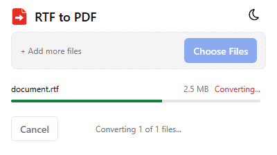
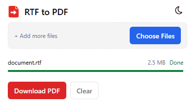

🎉 RTF to PDF is installed!
Click the puzzle piece (1) in the top-right corner of your browser. Then click the little pin (2) next to the extension to keep it on your toolbar.

Once pinned, click the RTF to PDF icon (3) on any page to start converting.

Already pinned? Skip to Step 2
RTF to PDF is ready
It is already on your toolbar. Here is how to convert your first file — everything happens right in your browser, no uploads, no accounts.

-
1Add your .rtf files
Drag & drop one or more .rtf files into the dashed area — or click Choose Files. You can queue several files at once.

-
2Convert
Press Convert. Each file shows its own progress; the popup stays responsive, so you can cancel at any time.

-
3Download the PDF
When all files are Done, click Download PDF for a single file or Download All as ZIP for several. Done!

Can't find the icon on your toolbar? Show me how to pin it